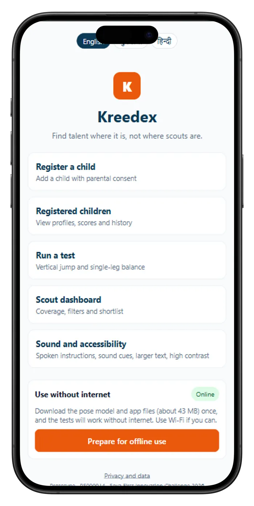
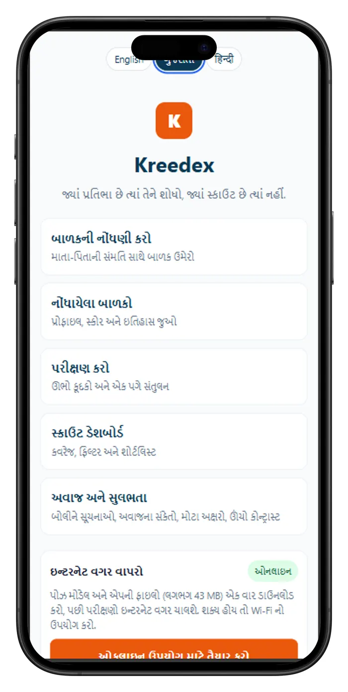
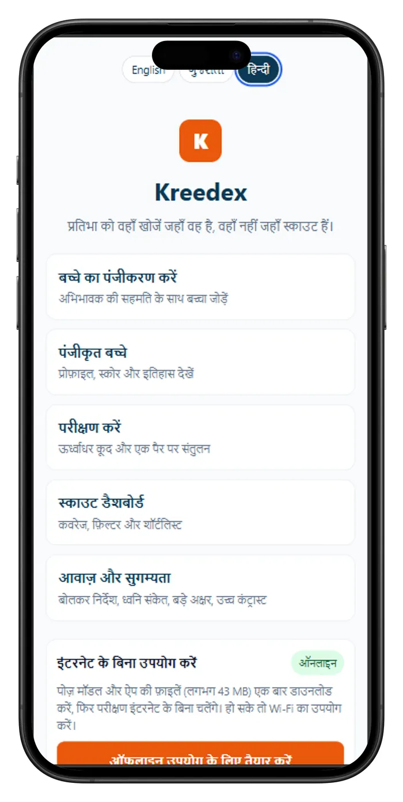

← All projects
Project · 2026 · Prototype
Kreedex
Find talent where it is, not where scouts are. A phone-based fitness-screening app that helps schools find athletic talent among children who never reach a formal scout.

Overview
How it works
- A teacher props up a phone, and on-device AI pose estimation (MediaPipe) measures or counts the result of guided tests: vertical jump, single-leg balance, push-ups, and Flamingo balance for ages 5 to 8.
- Results are mapped to the official Khelo India performance levels where published tables exist, and shown on a profile with history and a progress chart.
- Sports officials get a privacy-reduced dashboard with filters, a shortlist pipeline, and a district coverage view, with names shown as initials.
- It works in English, Gujarati, and Hindi with spoken cues, and runs offline after a one-time download. No video is recorded, saved, or uploaded.
Screens
Three languages



Technology
Built with
- React
- Vite
- MediaPipe Pose Landmarker (WebAssembly)
- IndexedDB
- Service worker (PWA)
- Web Speech
- Web Audio
- Vercel
Honest status: this is a prototype. The Kreedex Score for two tests uses placeholder reference values, the login is a demonstration, there is no server yet, and accuracy validation is in progress.